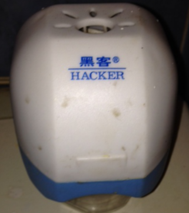

| Prev Next | Secure Lazy Binding | Slide #27 |

Sweet, a syscall that can change read-only memory!
Hmmm, this is a power that can only be used for Good Or Evil
Can we make it only capable of resolving lazy bindings to their correct values?
Only want dynamic linker to be able to call this
Don't want this to be useful as a target of Return-Oriented-Programming
Don't want it to be able to change arbitrary memory
| EuroBSDCon 2014 | Copyright © 2014 Philip Guenther |